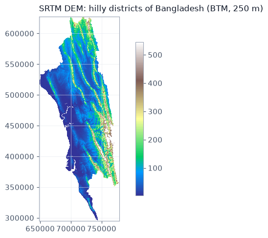
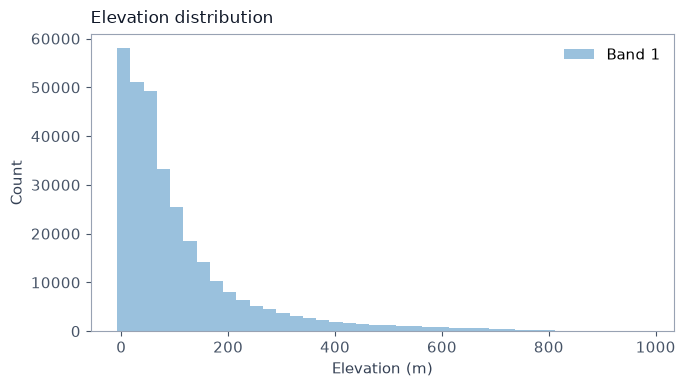
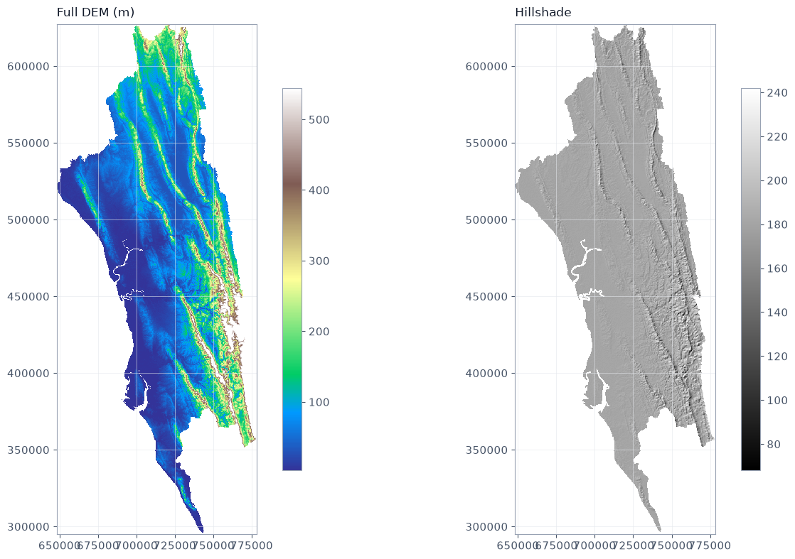
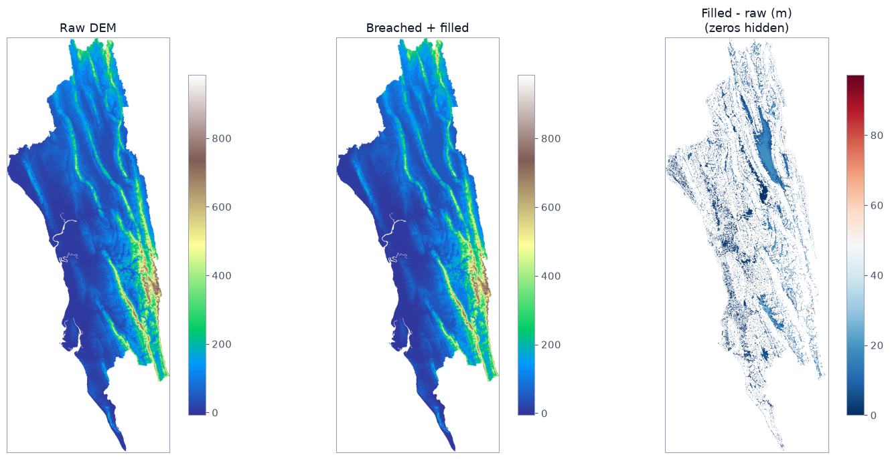
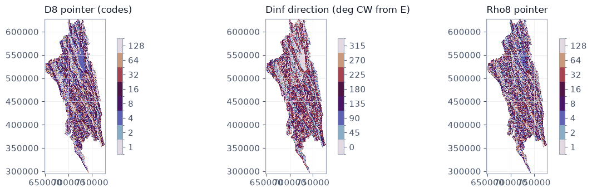
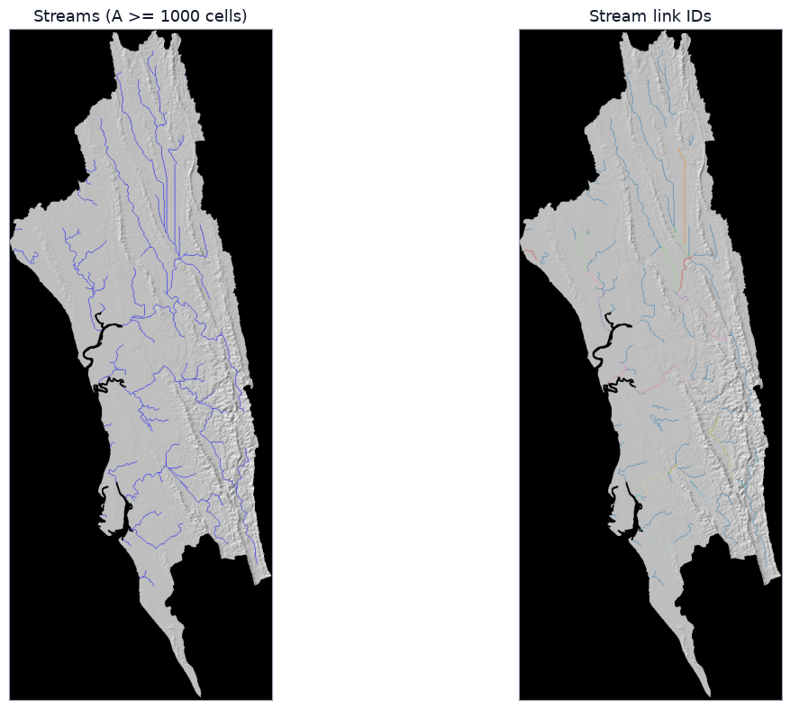
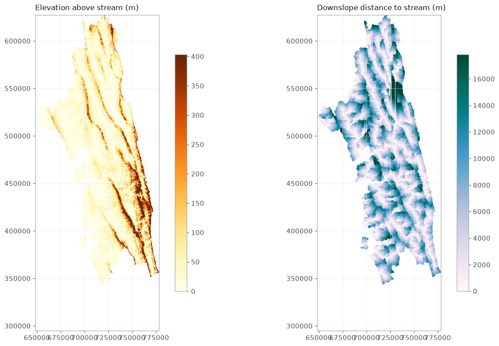
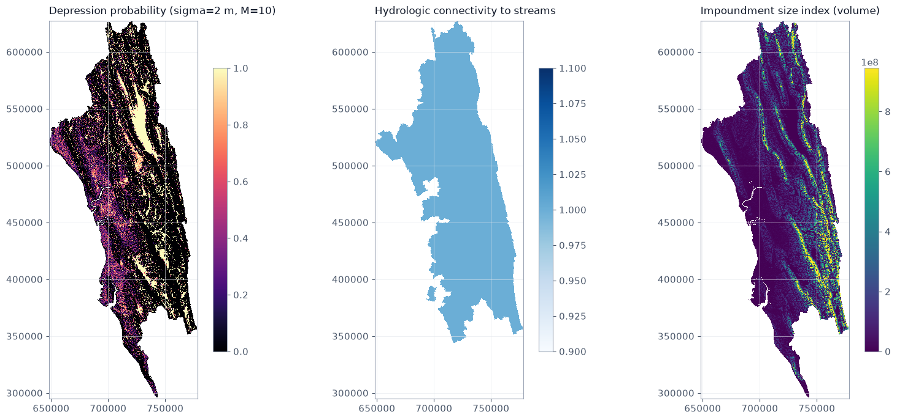

Hydrology modeling is a key aspect of understanding how water moves across landscapes. Using digital elevation models (DEMs), we can analyze surface water processes such as flow routing, watershed delineation, and stream extraction. This notebook demonstrates how to perform hydrological analysis in Python with GeoLattice, leveraging its spatial_analysis.surface_hydrology module for comprehensive and efficient workflows. The methods covered here can help identify water accumulation patterns, drainage networks, and catchment areas, essential for environmental studies, water management, and risk assessment.
Overview
Spatial hydrology analyses how water moves and accumulates across a land surface using a digital elevation model (DEM). It is one of the deepest specialisations in Whitebox-style terrain analysis and spans DEM conditioning, flow routing, watershed delineation, stream extraction, and connectivity / storage modelling.
This notebook uses geolattice.spatial_analysis.surface_hydrology with the entire Bangladesh hilly-district DEM (Data/00_shared/raster_data/Bangladesh/hilly_dem_BTM.tiff, Bangladesh Transverse Mercator, 250 m; ~521 × 1329 cells). The workflow follows the topics in the Whitebox Workflows Spatial Hydrology chapter and the R notes in R_Code/surface-hydrological-anlysis-whitbox-r.qmd.
Most raw DEMs contain surface depressions: cells or groups of cells enclosed by higher neighbours. They may be real topographic basins, acquisition noise, or interpolation artefacts. Standard single-flow routing (D8) cannot route water out of closed sinks: the algorithm terminates where no downhill neighbour exists.
Before flow routing, the DEM must be conditioned so spurious depressions are removed while genuine basins (lakes, wetlands) can be preserved when desired.
Two principal strategies:
Filling: raise cells inside each depression up to the spill (pour-point) elevation. Guarantees a drained surface but can create large flats that need a secondary gradient (flat increment).
Breaching: cut a narrow least-cost channel through the barrier around a depression. Preserves more of the original elevation field and is preferred when barriers are road embankments or similar artefacts.
In practice a hybrid approach: breach where possible, fill remaining sinks, is often optimal (Whitebox breach_depressions_least_cost(..., fill_deps=True)).
Flow direction algorithms
After conditioning, a flow-direction raster encodes where water leaves each cell:
Locate the repository root, import hydrology helpers, and create the output folder.
Installation. This notebook needs installation option 2 (core plus spatial analysis): pip install "geolattice[analysis]". See “Installation options” in the GeoLattice README.
Code
# Display matplotlib figures inline in this Jupyter notebook.%matplotlib inlinefrom pathlib import Path # filesystem paths for locating the DEM and outputs# Third-party numeric / plotting stack used throughout the notebook.import matplotlib.pyplot as plt # figure and axes creation for hydrology mapsimport numpy as np # array ops for DEM differencing and stream masksimport pandas as pd # tabular display of summarize_raster resultsfrom IPython.display import display # rich table previews in the notebook# ===================================================================# Setup and helpers for surface hydrology.# Import GeoLattice hydrology helpers, point BD/OUT/DEM at sample paths, and define# show_raster() for quick GeoTIFF summaries.# ===================================================================# The installed package lives in src/; the repository root is its parent.import geolatticeROOT = Path(geolattice.__file__).resolve().parents[1]ifnot (ROOT /"Data").is_dir():raiseFileNotFoundError("Could not find the GeoLattice repository root.")# Raster I/O helpers used to inspect DEM and derivative rasters.from geolattice.raster import ( open_raster_data, # open a GeoTIFF for metadata / arrays summarize_raster, # count/min/max/mean/percentiles)# Surface hydrology helpers used in the exercises below.from geolattice.spatial_analysis import ( basins, # whole-DEM basin IDs from a D8 pointer breach_depressions, # carve outlets through depressions catchment_delineation, # catchment from a pour point (available) d8_flow_accumulation, # D8 upslope accumulation d8_pointer, # D8 flow-direction pointer codes dinf_flow_accumulation, # D-infinity specific catchment area dinf_pointer, # D-infinity flow direction downslope_distance_to_stream, # along-flow distance to channel elevation_above_stream, # HAND-style height above nearest stream extract_streams, # threshold flow accumulation to streams fd8_pointer, # FD8 / MFD fractional outflow weights fill_depressions, # raise sinks to create a hydrologic DEM hillshade, # shaded relief for map context hydrologic_connectivity, # connectivity to the stream network impoundment_analysis, # dam / impoundment size index rho8_pointer, # stochastic Rho8 pointer snap_pour_points, # snap outlets onto nearby stream cells stochastic_depression_analysis, # depression probability under DEM error stream_segmentation, # assign unique IDs to stream links subbasins, # subbasins for each stream link watershed, # watersheds for a set of pour points wetness_index, # topographic wetness index)from geolattice.viz import apply_map_style, plot_raster, plot_raster_histogram, plot_rasters # map helpers# Paths to the Bangladesh DEM and a dedicated hydrology output folder.BD = ROOT /"Data"/"00_shared"/"raster_data"/"Bangladesh"# Bangladesh raster samplesOUT = ROOT /"Data"/"00_shared"/"raster_data"/"output_folder"/"bangladesh"/"hydrology"# write outputs hereOUT.mkdir(parents=True, exist_ok=True) # create the output folder if neededDEM = BD /"hilly_dem_BTM.tiff"# 250 m BTM DEM for the hilly districtsassert DEM.exists(), f"Missing DEM: {DEM}"# fail early if the DEM is absentapply_map_style() # apply the GeoLattice tutorial matplotlib map defaultsdef show_raster(path, title=None):"""Print a short metadata summary for a GeoTIFF.""" path = Path(path) # normalize to Pathwith open_raster_data(path) as ds: # open for metadata only gt = ds.geotransform # origin and pixel sizeprint(f"path: {path.name}") # file nameprint(f"size: {ds.width} x {ds.height} bands={ds.band_count}") # dimensionsprint(f"res: {abs(gt[1]):.4f} x {abs(gt[5]):.4f}") # pixel sizeprint(f"bounds: {ds.bounds}") # geographic extentprint(f"crs: {ds.crs}") # coordinate reference systemprint(f"nodata: {ds.get_band(1).nodata}") # nodata flagif title:print(f"title: {title}") # optional labelprint(f"DEM: {DEM}") # confirm DEM pathprint(f"Output: {OUT}") # confirm output folder
30 m SRTM elevation resampled to 250 m for the hilly districts of Bangladesh (Bandarban / Chittagong Hill Tracts), projected to Bangladesh Transverse Mercator (hilly_dem_BTM.tiff). The same DEM underpins the R Whitebox hydrology notes.
Code
# Print DEM metadata and elevation summary statistics.show_raster(DEM, "Hilly districts DEM (BTM)") # path, size, CRS, nodatastats = summarize_raster(DEM, percentiles=(2, 25, 50, 75, 98)) # robust percentilesdisplay(pd.Series(stats).to_frame("value")) # show stats as a one-column table# Terrain-colored map of the full Bangladesh hilly DEM.ax = plot_raster( DEM, # path to the elevation GeoTIFF title="SRTM DEM: hilly districts of Bangladesh (BTM, 250 m)", # map title cmap="terrain", # elevation-friendly colormap kind="general", # single-band continuous display robust=True, # percentile stretch for contrast show=False, # defer display)plt.show() # render the DEM map# Elevation histogram for the same DEM.ax = plot_raster_histogram(DEM, bins=40, title="Elevation distribution", show=False)ax.set_xlabel("Elevation (m)") # label the x-axis with elevation unitsplt.show() # render the histogram
path: hilly_dem_BTM.tiff
size: 521 x 1329 bands=1
res: 250.0000 x 250.0000
bounds: Bounds(648050.3746814046, 295017.2625412984, 778300.3746814046, 627267.2625412983)
crs: PROJCS["unknown",GEOGCS["WGS 84",DATUM["WGS_1984",SPHEROID["WGS 84",6378137,298.257223563,AUTHORITY["EPSG","7030"]],AUTHORITY["EPSG","6326"]],PRIMEM["Greenwich",0],UNIT["degree",0.0174532925199433,AUTHORITY["EPSG","9122"]],AUTHORITY["EPSG","4326"]],PROJECTION["Transverse_Mercator"],PARAMETER["latitude_of_origin",0],PARAMETER["central_meridian",90],PARAMETER["scale_factor",0.9996],PARAMETER["false_easting",500000],PARAMETER["false_northing",-2000000],UNIT["metre",1,AUTHORITY["EPSG","9001"]],AXIS["Easting",EAST],AXIS["Northing",NORTH]]
nodata: nan
title: Hilly districts DEM (BTM)
value
count
310665
min
-7.796429
max
985.049622
mean
109.007889
std
129.049986
sum
33864935.903503
percentiles
{'p2': 3.0354053211212157, 'p25': 29.240074157...


Hillshade
Shaded relief helps interpret flow pathways against topography. We compute hillshade for the full DEM and use it as a backdrop in later maps.
All subsequent hydrology steps run on the entire hilly_dem_BTM.tiff mosaic (no AOI clip).
Code
# Use the full Bangladesh hilly-district DEM for the hydrology workflow.dem = DEM # full Bangladesh hilly-district DEMshow_raster(dem, "Full DEM (BTM)") # confirm extent and resolution# Compute a single-direction hillshade for cartographic context under flow maps.hs = OUT /"hillshade.tif"# hillshade output pathhillshade(dem, hs, azimuth=315, altitude=45, overwrite=True) # NW sun at 45 deg# Side-by-side DEM and hillshade.fig, axes = plt.subplots(1, 2, figsize=(14, 8)) # wide two-panel figureplot_raster(dem, ax=axes[0], title="Full DEM (m)", cmap="terrain", robust=True, show=False)plot_raster(hs, ax=axes[1], title="Hillshade", cmap="gray", show=False)plt.tight_layout() # reduce unused whitespaceplt.show() # render both panels
path: hilly_dem_BTM.tiff
size: 521 x 1329 bands=1
res: 250.0000 x 250.0000
bounds: Bounds(648050.3746814046, 295017.2625412984, 778300.3746814046, 627267.2625412983)
crs: PROJCS["unknown",GEOGCS["WGS 84",DATUM["WGS_1984",SPHEROID["WGS 84",6378137,298.257223563,AUTHORITY["EPSG","7030"]],AUTHORITY["EPSG","6326"]],PRIMEM["Greenwich",0],UNIT["degree",0.0174532925199433,AUTHORITY["EPSG","9122"]],AUTHORITY["EPSG","4326"]],PROJECTION["Transverse_Mercator"],PARAMETER["latitude_of_origin",0],PARAMETER["central_meridian",90],PARAMETER["scale_factor",0.9996],PARAMETER["false_easting",500000],PARAMETER["false_northing",-2000000],UNIT["metre",1,AUTHORITY["EPSG","9001"]],AXIS["Easting",EAST],AXIS["Northing",NORTH]]
nodata: nan
title: Full DEM (BTM)

DEM conditioning
Hydrology tools route water downhill based on cell elevations. If no neighbour is lower, flow stops: a sink, pit, or depression.
Filling vs breaching
For a depression with pour-point elevation \(z_p\) and interior cells \(z_i\):
\[
z_i^{\text{filled}} = \max(z_i,\, z_p)
\]
Priority-flood / Wang-Liu filling raises every interior cell to \(z_p\). Flats may need a tiny gradient \(\varepsilon\) so D8 has a unique direction:
\[
z^{\text{flat}} = z_p + k\,\varepsilon,\quad k = 0,1,2,\ldots
\]
Breaching instead lowers a path of cells through the barrier. A least-cost breach minimises cumulative vertical cost subject to maximum length / depth constraints (Whitebox breach_depressions_least_cost).
geolattice exposes:
breach_depressions: single-cell pits + priority breach / optional fill
fill_depressions: Wang-Liu-style priority flood with optional flat fix
Code
# Condition the DEM: breach depressions, then fill remaining sinks.breached = OUT /"dem_breached.tif"# DEM after depression breachingfilled = OUT /"dem_filled.tif"# hydrologically conditioned DEMbreach_depressions(dem, breached, fill_pits=True, overwrite=True) # carve outlets through sinksfill_depressions(breached, filled, fix_flats=True, overwrite=True) # raise leftover sinks / flats# Visualise how conditioning changed the DEM.with open_raster_data(dem) as ds: z0 = np.asarray(ds.read(bands=1), dtype=np.float64) # raw elevation array nd = ds.get_band(1).nodata # nodata flagif nd isnotNone: z0 = np.where(z0 == nd, np.nan, z0) # mask nodata as NaNwith open_raster_data(filled) as ds: z1 = np.asarray(ds.read(bands=1), dtype=np.float64) # filled elevation array nd = ds.get_band(1).nodata # nodata flagif nd isnotNone: z1 = np.where(z1 == nd, np.nan, z1) # mask nodata as NaNdiff = z1 - z0 # fill depth (positive where fill raised the surface)diff = np.where(np.abs(diff) <1e-6, np.nan, diff) # hide near-zero differences# Three-panel comparison: raw, filled, and fill depth.fig, axes = plt.subplots(1, 3, figsize=(16, 7)) # three-panel figureim0 = axes[0].imshow(z0, cmap="terrain") # raw DEMaxes[0].set_title("Raw DEM") # left panel titleplt.colorbar(im0, ax=axes[0], fraction=0.046) # colorbar for raw elevationsim1 = axes[1].imshow(z1, cmap="terrain") # conditioned DEMaxes[1].set_title("Breached + filled") # middle panel titleplt.colorbar(im1, ax=axes[1], fraction=0.046) # colorbar for filled elevationsim2 = axes[2].imshow(diff, cmap="RdBu_r") # fill depthaxes[2].set_title("Filled - raw (m)\n(zeros hidden)") # right panel titleplt.colorbar(im2, ax=axes[2], fraction=0.046) # colorbar for fill depthfor ax in axes: ax.set_xticks([]) # hide x tick labels ax.set_yticks([]) # hide y tick labelsplt.tight_layout() # reduce unused whitespaceplt.show() # render the comparisonprint(f"Cells raised by fill: {int(np.nansum(diff >0))}") # count of filled cellsprint(f"Max fill depth (m): {float(np.nanmax(diff)) if np.isfinite(np.nanmax(diff)) else0:.3f}") # max fill

Cells raised by fill: 62779
Max fill depth (m): 97.249
Flow direction
D8 (O’Callaghan & Mark, 1984)
Each cell \(i\) sends all flow to the neighbour \(j\) with the steepest drop:
\[
S_j = \frac{z_i - z_j}{d_{ij}},\qquad
d_{ij} = \begin{cases}
\Delta x & \text{cardinal}\\
\sqrt{2}\,\Delta x & \text{diagonal}
\end{cases}
\]
Whitebox / this package store the direction as a pointer code (power of 2):
Code
1
2
4
8
16
32
64
128
Dir
E
SE
S
SW
W
NW
N
NE
Rho8 (Fairfield & Leymarie, 1991)
Same neighbourhood, but the receiver is drawn randomly with probability proportional to \(S_j\) among downslope neighbours: reducing D8’s preference for cardinal axes.
D-infinity (Tarboton, 1997)
Flow is split between two adjacent downslope neighbours according to the aspect angle of the steepest triangular facet. If the facet angle is \(\alpha\) and the facet spans \(0\ldots\alpha_{\max}\):
The pointer raster stores continuous direction (degrees clockwise from east in Whitebox style).
FD8 / Quinn / MDinf / minimal dispersion
FD8 (Freeman): weights \(\propto (S_j)^p\) to all downslope neighbours (default \(p \approx 1.1\)).
Quinn: FD8 variant with contour-length factor: common in wetness work.
MD-infinity: apportions flow among multiple triangular facets.
Minimal dispersion: blends D8 (channels) and Dinf (hillslopes) using a local convergence proxy.
Code
# Compute D8, D-infinity, and Rho8 flow-direction pointers from the filled DEM.d8p = OUT /"d8_pointer.tif"# D8 pointer codesdinf_p = OUT /"dinf_pointer.tif"# D-infinity flow directionrho8_p = OUT /"rho8_pointer.tif"# stochastic Rho8 pointerd8_pointer(filled, d8p, overwrite=True) # single-receiver D8 codesdinf_pointer(filled, dinf_p, overwrite=True) # continuous D-infinity directionsrho8_pointer(filled, rho8_p, seed=42, overwrite=True) # Rho8 with fixed seed# Optional multi-band MFD weights (8 bands: E..NE).fd8_p = OUT /"fd8_weights.tif"# FD8 fractional outflow stackfd8_pointer(filled, fd8_p, exponent=1.1, overwrite=True) # MFD weights with slope exponent# Map the three single-band pointer surfaces.plot_rasters( [d8p, dinf_p, rho8_p], # pointer paths titles=["D8 pointer (codes)", "Dinf direction (deg CW from E)", "Rho8 pointer"], # panel titles ncols=3, # three columns cmap="twilight", # cyclic-friendly colormap robust=True, # percentile stretch show=False, # defer display)plt.show() # render the pointer mapswith open_raster_data(fd8_p) as ds:print(f"FD8 weight stack: {ds.band_count} bands (fractional outflow to 8 neighbours)") # confirm 8 bands

FD8 weight stack: 8 bands (fractional outflow to 8 neighbours)
Flow accumulation
Flow accumulation measures how much upslope area drains through each cell. It is the primary surface for extracting streams, delineating watersheds, and building wetness indices.
D8 cell-count accumulation
Process cells from high to low elevation. Let \(A_i\) be the accumulation at cell \(i\) (initialised to 1 = the cell itself):
TWI is a terrain-based proxy for soil moisture and saturation potential (Beven & Kirkby; Quinn et al.). Areas with large upslope area and gentle slopes tend to stay wetter.
\(T\) depends on DEM resolution and landscape. For this full 250 m mosaic we use a threshold of 1000 cells (same order as the R Whitebox notes); lower it for a denser network.
Downstream tools:
stream_segmentation: unique IDs for links between junctions / heads / outlets
catchment_delineation / subbasins: upslope area of each link
Whitebox also converts raster streams to vectors with a D8 pointer (raster_streams_to_vector); here we stay in raster space for the notebook.
Code
# Threshold in cells: tune to landscape / resolution (full DEM).STREAM_THRESHOLD =1000# minimum upslope cells to classify as streamstreams = OUT /"streams.tif"# binary stream rasterextract_streams(fa_cells, streams, threshold=STREAM_THRESHOLD, overwrite=True) # threshold FAlinks = OUT /"stream_links.tif"# unique stream-link IDsstream_segmentation(streams, d8p, links, overwrite=True) # segment the network# Read stream and link arrays for plotting.with open_raster_data(streams) as ds: st = np.asarray(ds.read(bands=1), dtype=np.float64) # stream mask values nd = ds.get_band(1).nodata # nodata flagif nd isnotNone: st = np.where(st == nd, np.nan, st) # mask nodatawith open_raster_data(links) as ds: lk = np.asarray(ds.read(bands=1), dtype=np.float64) # link ID array nd = ds.get_band(1).nodata # nodata flagif nd isnotNone: lk = np.where(lk == nd, np.nan, lk) # mask nodata# Overlay streams and link IDs on hillshade.fig, axes = plt.subplots(1, 2, figsize=(14, 8)) # two-panel figureaxes[0].imshow(hs_arr, cmap="gray") # hillshade baseaxes[0].imshow(np.ma.masked_where(~(st >0), st), cmap="winter", alpha=0.9) # stream cellsaxes[0].set_title(f"Streams (A >= {STREAM_THRESHOLD} cells)") # left titleaxes[1].imshow(hs_arr, cmap="gray") # hillshade baseaxes[1].imshow(np.ma.masked_where(~np.isfinite(lk) | (lk <=0), lk), cmap="tab20", alpha=0.9) # linksaxes[1].set_title("Stream link IDs") # right titlefor ax in axes: ax.set_xticks([]) # hide x ticks ax.set_yticks([]) # hide y ticksplt.tight_layout() # reduce unused whitespaceplt.show() # render both panelsprint(f"Stream cells: {int(np.nansum(st >0))}") # count of channel cellsprint(f"Unique links: {len(np.unique(lk[np.isfinite(lk) & (lk >0)]))}") # number of link IDs

Stream cells: 5745
Unique links: 783
Watershed delineation
A watershed (catchment, basin) is the set of cells that drain to a common outlet. Given D8 pointers, delineation is an upstream flood fill from one or more pour points.
Single / multiple outlets
Place outlet point(s) on or near the stream network.
Optionally snap each point to the nearest stream cell within distance \(d\) (Jenson snap: prefer high-\(A\) cells when a weight raster is supplied).
watershed(d8_pointer, pour_points, ...) labels every upslope cell with the outlet ID.
Multiple outlets produce nested or adjacent basins; each cell keeps the ID of the first seed reached when walking upstream (nested accounting is explicit in Whitebox unnest_basins).
Subbasins
subbasins(d8_pointer, streams) / catchment_delineation seed every stream-link outlet and label its upslope area: useful for distributed hydrologic modelling.
Whole DEM basins
basins(d8_pointer) treats DEM-edge and no-flow sinks as outlets and labels complete drainage basins.
Code
# Place pour points at high-accumulation stream cells (auto outlets).with open_raster_data(fa_cells) as ds: fa2 = np.asarray(ds.read(bands=1), dtype=np.float64) # D8 accumulation array nd = ds.get_band(1).nodata # nodata flag gt = ds.geotransform # origin and pixel size for map coordsif nd isnotNone: fa2 = np.where(fa2 == nd, np.nan, fa2) # mask nodatastream_mask = np.isfinite(st) & (st >0) # True on channel cells# Pick a few local FA maxima along streams as outlets.fa_stream = np.where(stream_mask, fa2, np.nan) # FA only on streams# Sample top cells, then keep spatially separated outlets.flat_idx = np.argsort(-np.nan_to_num(fa_stream, nan=-np.inf), axis=None) # high FA firstoutlets = [] # list of (x, y) map coordinateschosen = [] # list of (row, col) already acceptedrows, cols = fa_stream.shape # array dimensionsfor idx in flat_idx[:2000]: # scan the top FA candidates r, c =divmod(int(idx), cols) # convert flat index to row/colifnot np.isfinite(fa_stream[r, c]): # skip non-stream / nodatacontinue# Keep outlets ~20 km apart on the full mosaic (80 cells x 250 m).ifany(abs(r - rr) +abs(c - cc) <80for rr, cc in chosen):continue# too close to an existing outlet x = gt[0] + (c +0.5) * gt[1] # map X of cell centre y = gt[3] + (r +0.5) * gt[5] # map Y of cell centre outlets.append((x, y)) # accept this outlet chosen.append((r, c)) # remember its pixel locationiflen(outlets) >=8: # stop after eight outletsbreakprint(f"Candidate outlets (map coords): {len(outlets)}") # how many outlets we keptfor i, (x, y) inenumerate(outlets, 1):print(f" {i}: ({x:.1f}, {y:.1f})") # print each outlet coordinatesnapped = snap_pour_points(outlets, streams, snap_distance=5000.0) # snap onto streams within 5 kmprint("Snapped:", snapped) # confirm snapped coordinatesws = OUT /"watersheds.tif"# watersheds for the snapped outletswatershed(d8p, snapped, ws, overwrite=True) # delineate pour-point watershedssub = OUT /"subbasins.tif"# subbasins per stream linksubbasins(d8p, streams, sub, overwrite=True) # one subbasin per linkwhole = OUT /"basins.tif"# whole-DEM basin IDsbasins(d8p, whole, overwrite=True) # basins draining to the DEM edge# Side-by-side watershed / subbasin / whole-basin maps.plot_rasters( [ws, sub, whole], # basin rasters titles=[f"Watersheds ({len(snapped)} outlets)", # pour-point watersheds"Subbasins (stream links)", # link-based subbasins"Whole DEM basins", # edge-draining basins ], ncols=3, # three columns cmap="tab20", # categorical colormap show=False, # defer display)plt.show() # render the basin maps
with \(d_k = \Delta x\) (cardinal) or \(\sqrt{2}\,\Delta x\) (diagonal). Alternatively, set vertical=True to return drop \(z_i - z_{s(i)}\).
Code
# Compute HAND-style elevation above stream and downslope distance to stream.eas = OUT /"elevation_above_stream.tif"# height above nearest stream (m)dds = OUT /"distance_to_stream.tif"# along-flow distance to stream (m)elevation_above_stream(filled, streams, d8p, eas, overwrite=True) # vertical height above channeldownslope_distance_to_stream(streams, d8p, dds, overwrite=True) # flow-path distance to channel# Side-by-side HAND and distance-to-stream maps.fig, axes = plt.subplots(1, 2, figsize=(14, 8)) # two-panel figureplot_raster( eas, ax=axes[0], title="Elevation above stream (m)", cmap="YlOrBr", robust=True, show=False) # left: HANDplot_raster( dds, ax=axes[1], title="Downslope distance to stream (m)", cmap="PuBuGn", robust=True, show=False) # right: distanceplt.tight_layout() # reduce unused whitespaceplt.show() # render both panels

Advanced analyses
Stochastic depression analysis
Real DEMs have vertical uncertainty \(\sigma\). A depression that appears once may vanish under a different noise realisation. Monte Carlo perturbation:
Binary (or probabilistic) indicator of whether a cell drains to the stream network along D8 within an optional maximum path distance: a simple proxy for runoff contribution and variable source areas.
Impoundment size index
For each potential dam cell, estimate the upslope volume (m³) or area (m²) impounded by a dam of given length / height: useful for small-reservoir screening.
Code
# Stochastic depression probability on the full DEM# (fewer iterations than a research run so the notebook stays practical).dep_prob = OUT /"depression_probability.tif"# probability of being a depressionstochastic_depression_analysis( dem, # raw DEM (uncertainty is on the observed surface) dep_prob, # output probability raster n_iter=10, # Monte Carlo iterations (small for a tutorial) error_magnitude=2.0, # metres: illustrative for 250 m SRTM seed=7, # reproducible random seed overwrite=True, # replace any previous probability file)conn = OUT /"hydrologic_connectivity.tif"# connectivity to streamshydrologic_connectivity(filled, streams, conn, overwrite=True) # upslope connection strengthimp = OUT /"impoundment_volume.tif"# impoundment size indeximpoundment_analysis( filled, # conditioned DEM imp, # output index raster dam_length=750.0, # ~3 cells at 250 m out_type="volume", # report a volume-style size index overwrite=True, # replace any previous impoundment file)# Three-panel advanced hydrology products.fig, axes = plt.subplots(1, 3, figsize=(16, 7)) # three-panel figureplot_raster( dep_prob, # depression probability ax=axes[0], title="Depression probability (sigma=2 m, M=10)", # left title cmap="magma", robust=True, show=False,)plot_raster( conn, # hydrologic connectivity ax=axes[1], title="Hydrologic connectivity to streams", # middle title cmap="Blues", show=False,)plot_raster( imp, # impoundment index ax=axes[2], title="Impoundment size index (volume)", # right title cmap="viridis", robust=True, show=False,)plt.tight_layout() # reduce unused whitespaceplt.show() # render all three panels

End-to-end pipeline (summary)
Hydrological analysis in this package follows the Whitebox preparation -> routing -> network -> delineation progression:
Condition the DEM (breach_depressions + fill_depressions).
Route flow with the algorithm that matches the question (D8 for channels, Dinf for hillslope flux / TWI).
Accumulate flow and extract streams by thresholding.
Delineate watersheds / subbasins from outlets or channel junctions.
Compute terrain hydrologic indices (TWI, height above stream, distance).
Advance to probabilistic depression analysis, connectivity, or impoundment modelling when uncertainty or storage matters.
# List every hydrology output file with its size on disk.print("Hydrology outputs written to:") # section headerfor p insorted(OUT.glob("*")): # sorted listing of OUT contentsif p.is_file(): # skip subdirectories if anyprint(f" {p.name:40s}{p.stat().st_size/1024:8.1f} KB") # name and size in KB